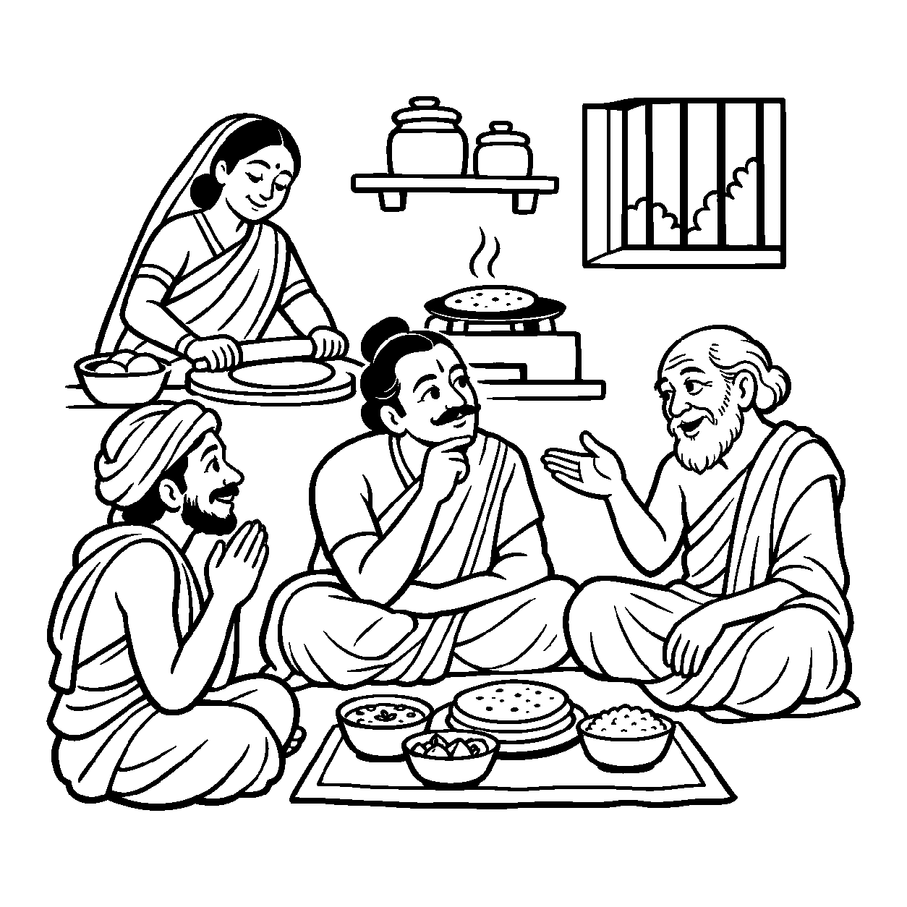

કુંભારના ચાકડા પર હજુ માટીનો પિંડ ફરી રહ્યો છે, આકાર હજી ઘડાઈ રહ્યો છે અને ભઠ્ઠીમાં પકવવાનો બાકી છે, છતાં કોઈ વટેમાર્ગુ પૂછે ત્યારે કુંભાર સહજ ભાવે કહે છે: "હું સુંદર ઘડો બનાવું છું!" કાર્ય હજુ અપૂર્ણ છે, છતાં સંકલ્પના આરંભથી તેને વ્યવહારમાં પરિપૂર્ણવત્ વાચા આપવી તે 'વર્તમાન નૈગમ પ્રતિપાદક વ્યવહાર' છે.
જે કાર્ય વર્તમાનમાં શરૂ થઈ ચૂક્યું છે પરંતુ હજુ સર્વથા સંપન્ન થયું નથી, તેને વ્યવહારની ભાષામાં પૂર્ણ થયેલા કાર્યની જેમ જ નિષ્પન્નવત્ બોલવું તે આ નયનું કાર્ય છે. લોકવ્યવહાર આવા સાહજિક વ્યવહારિક વચનો વિના એક ડગલું પણ આગળ ચાલી શકે નહીં.
જો આ નયનો સ્વીકાર ન કરીએ, તો જ્યાં સુધી છેલ્લો કણ ન પાકે ત્યાં સુધી 'ભાત રંધાય છે' એવું બોલી જ ન શકાય! આ નય ભાષાની સૂક્ષ્મ અડચણોને દૂર કરીને સંકલ્પ અને ક્રિયા વચ્ચેના સાતત્યને વ્યવહારિક મંચ પર સરળતાથી સ્થાપિત કરે છે.
આરંભાયું કાર્ય જે, હજી નથી સંપન્ન;
સંકલ્પે વ્યવહારથી, વદે સદા નિષ્પન્ન.
પ્રત્યેક ક્રિયાના વર્તમાન પરિણામ પ્રત્યે સભાન રહી પ્રમાદનો ત્યાગ કરવો.

ધર્મપુરી નગરમાં પંડિત વાચસ્પતિ નામના એક અત્યંત જડ અને શબ્દાર્થવાદી વ્યાકરણશાસ્ત્રી રહેતા હતા. એક સાંજે તેમના ઘેર દૂરના ગામથી એક અતિથિ આવી ચડ્યા. અતિથિ ભૂખથી વ્યાકુળ હતા. પંડિતજીના પત્નીએ રસોડામાંથી અવાજ આપ્યો, "બસ દસ મિનિટ બેસો, હું સરસ રોટલી બનાવું છું." આ સાંભળતાં જ પંડિતજી ઉગ્ર બનીને પત્ની પર ખીજાયા: "તારું બોલવું સર્વથા અસત્ય છે! લોટ હજી કથરોટમાં છે, ગેસ હજી સળગ્યો નથી, તો 'રોટલી બનાવું છું' એવું કેમ બોલાય? તારે એમ બોલવું જોઈએ કે હું લોટમાં પાણી ભેળવી રહી છું!" પંડિતજીની આવી શાબ્દિક માથાકૂટ અને દલીલોથી અતિથિ મૂંઝાઈ ગયા અને ઘરનું વાતાવરણ અત્યંત તંગ થઈ ગયું. અતિથિ મનમાં વિચારવા લાગ્યા: "આ શાબ્દિક જડતામાંથી સાચો વ્યવહાર ક્યારે પ્રગટશે?"
તે જ સમયે પંડિતજીના વૃદ્ધ ગુરુવર્ય ત્યાં પધાર્યા. તેમણે પરિસ્થિતિ પારખીને પંડિત વાચસ્પતિને સ્નેહથી ઠપકો આપ્યો: "વત્સ, તું શબ્દોના ભાર નીચે વ્યવહારના પ્રાણને કચડી રહ્યો છે. વર્તમાન નૈગમ પ્રતિપાદક વ્યવહારને સમજ. જ્યારે કોઈ કાર્યનો સંકલ્પપૂર્વક આરંભ થઈ જાય, ત્યારે તેને પૂર્ણતાના રૂપમાં બોલવો એ જ લોકવ્યવહારની સુંદરતા છે. જો આ નય ન હોય, તો સંસારમાં પરસ્પરનો કોઈ વ્યવહાર કે ભાષા સંભવી જ ન શકે." ગુરુજીના આ વિવેકપૂર્ણ બોધથી પંડિતજીની આંખો ઊઘડી ગઈ. તેમનો શાબ્દિક અહંકાર ઓગળી ગયો. તેમણે ક્ષમા માંગી અને સહુએ પ્રેમપૂર્વક સાથે બેસીને ભોજનનો આનંદ માણ્યો.
જો આ નય કદાગ્રહ કે આળસનું બહાનું બને, તો મનુષ્ય કેવળ કાર્ય શરૂ કરીને જ પોતાને કૃતકૃત્ય માની બેસે છે. માત્ર આરંભને જ સિદ્ધિ માની લેવી અને અંતિમ પરિણામ સુધી પહોંચ્યા વગર સંતોષ માની લેવો એ સાધના અને વ્યાપાર બંનેમાં ઘોર નુકસાન કરે છે.
આ જ નય જ્યારે સમન્વયકારી વિવેક બને છે, ત્યારે તે સાધકને આરંભ કરેલી ધર્મસાધનામાં અડગ રહેવાનું બળ આપે છે. તે સંકલ્પને વચન દ્વારા દૃઢ બનાવીને અધૂરા માર્ગ પરથી પૂર્ણતાના શિખર તરફ ધીરજપૂર્વક આગળ વધવાની સુંદર વ્યવહારિક પ્રેરણા પૂરી પાડે છે.